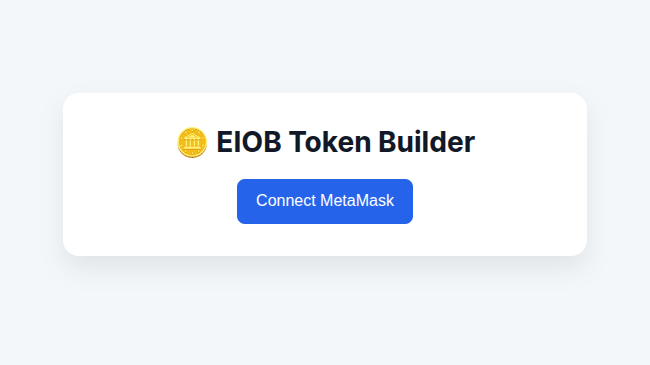
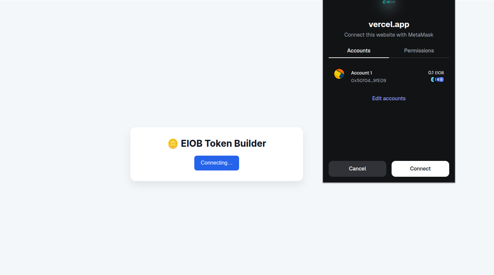
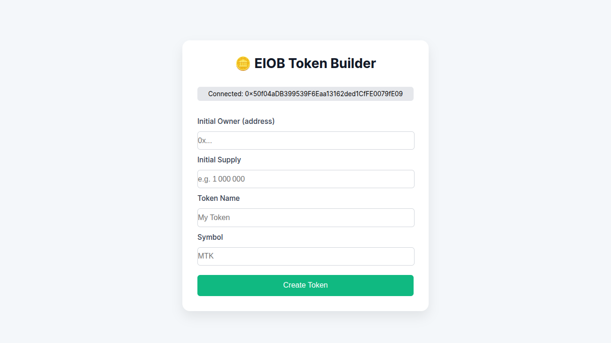
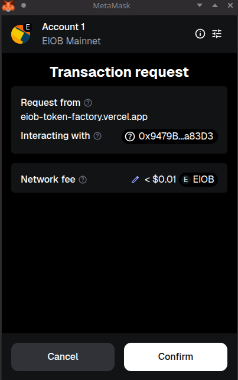

How to Use the EIOB Token Builder Website
Prerequisites
- Browser with Metamask installed
- Metamask should be using the EIOB Mainnet
Creating Your ERC20 Token
1. Click the Connect Metamask button

2. Connect your Metamask Wallet

3. Add your Token details

4. Deploy your token on the EIOB Mainnet

After adding your token details, press Create Token and confirm your transaction to deploy your custom token.
5. Check your transaction on the block explorer

Wait for the transaction to finish and check the details of your new token.
6. Interact with your new token

Head over to your Token from the transaction page to check the token's smart contract and interact with the new token.